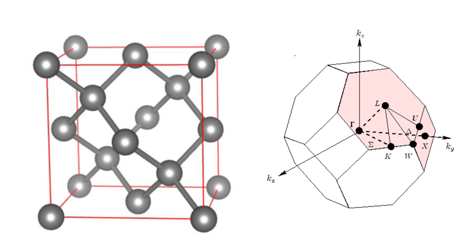

Input file for a simple scf¶
Minimum data to generate an input file
Run type (Scf, MD, OPT, ….)
Atomic structure and bravais lattice
Brillouin Zone Sampling
Level of theory

Simple input for the silicon bulk in diamond structurral phase can be written as follows
SystemName Bulk Silicon
SystemLabel Si # all data obtained from this calculation has
# systemLabel prefix and this label will be used for next analysis
NumberOfSpecies 1
NumberOfAtoms 2
%block ChemicalSpeciesLabel
1 14 Si # atom label, atomic number, element symbol
%endblock ChemicalSpeciesLabel
LatticeConstant 5.41119733025 Ang #here we define lattice-type
%block LatticeVectors # for fcc structure basis vectors are
0.00 0.50 0.50
0.50 0.00 0.50
0.50 0.50 0.00
%endblock LatticeVectors
AtomicCoordinatesFormat ScaledByLatticeVectors
%block AtomicCoordinatesAndAtomicSpecies
0.00 0.00 0.00 1
0.25 0.25 0.25 1
%endblock AtomicCoordinatesAndAtomicSpecies
%block kgrid_Monkhorst_Pack # Brillouin Zone Sampling (automatic here)
4 0 0 0.5
0 4 0 0.5
0 0 4 0.5
%endblock kgrid_Monkhorst_Pack
if siesta is now in your PATH you can run this example with
siesta < input.fdf | tee output.out
Open your output and check all calculated data carefully
first of all we can see our setting by searching simulation parameters
in the output. Also detailed information on basis set, Pressure, force
and energy decomposition can be find there. A fast way to extract
total force, energy, electron number is
egrep " Tot |: E_KS\(| electron" Silic.out